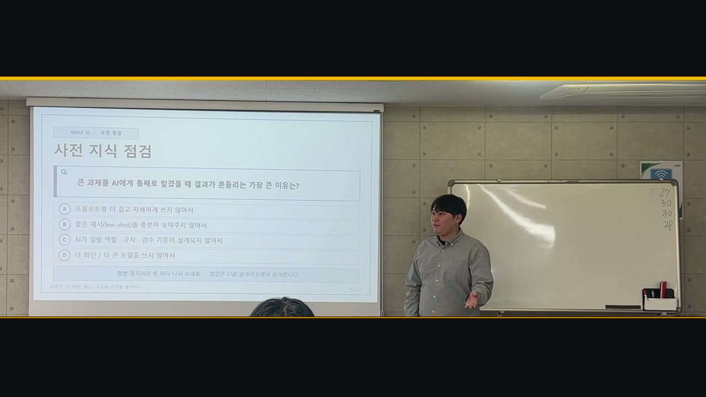
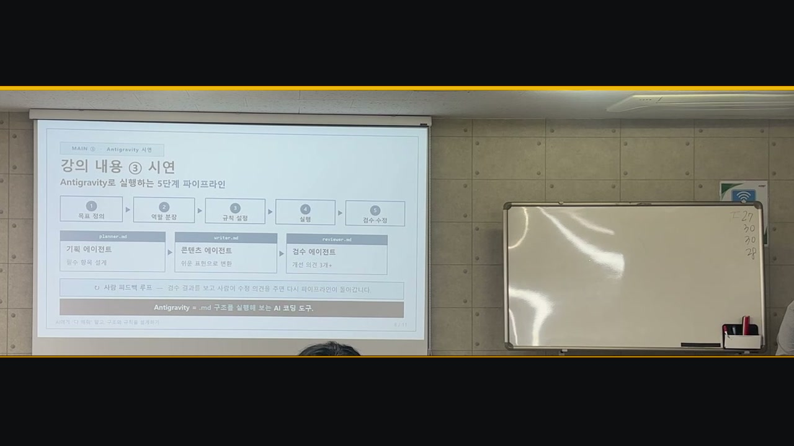
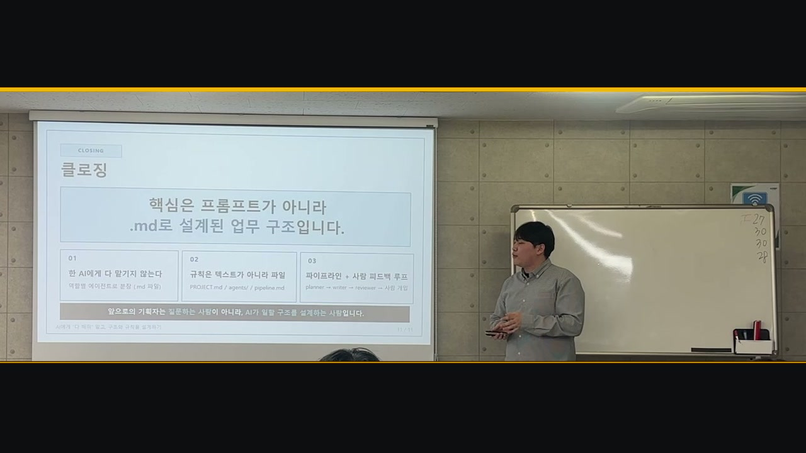

한눈에 보기
- 어디서 · 무슨 일
- AI 과정개발 및 교육담당자 양성과정 · 초보 HRD 수강생 대상 15분 마이크로러닝
- 주어진 과제
- AI 에이전트라는 낯선 개념을, 초보 HRD 수강생이 15분 안에 자기 업무로 이해하게 만들어야 했습니다.
- 내 역할
- 기획·제작·시연·진행. 슬라이드 11장, 발표 대본, 시연 런북, 에이전트 규칙 3종, 인터랙티브 HTML 체크리스트를 만들고 직접 강의했습니다.
- 결과
- 사전·사후 질문과 4~5분 라이브 시연을 넣어 15분 강의를 진행했습니다. 안정적인 전달력과 사전·사후 질문, 시연으로 이어지는 참여 설계에 대한 피드백을 받았습니다.
- 이 경험으로 할 수 있는 일
- 어려운 AI 개념을 현업 사례로 바꿔 짧은 강의로 전달하고, 질문과 시연으로 참여를 끌어낼 수 있습니다.
진행 과정
- 문제 제기큰 과제를 AI에 통째로 맡겼을 때 결과가 흔들리는 경험에서 시작했습니다.
- 사전 점검객관식 질문과 손들기로 참여를 끌어내고 역할·규칙·검증 기준으로 연결했습니다.
- 개념 비교프롬프트 엔지니어링과 하네스 엔지니어링의 차이를 역할별 에이전트와 파일 구조로 설명했습니다.
- 라이브 시연기획 → 콘텐츠 → 검수 에이전트가 교육기획안 체크리스트를 만들고, 사람이 반영할 항목을 골라 최종 HTML을 고쳤습니다.
- 사후 확인핵심 내용을 다시 묻고 도구·파일 구성·업무 적용에 관한 질문에 답했습니다.
만든 자료
 본인 제작강의 슬라이드 표지
본인 제작강의 슬라이드 표지


직접 진행사전 지식 점검 장면

직접 진행에이전트 파이프라인 설명

직접 진행핵심 메시지 클로징강의 장면은 2026년 5월 14일 촬영 영상에서 가져왔습니다.